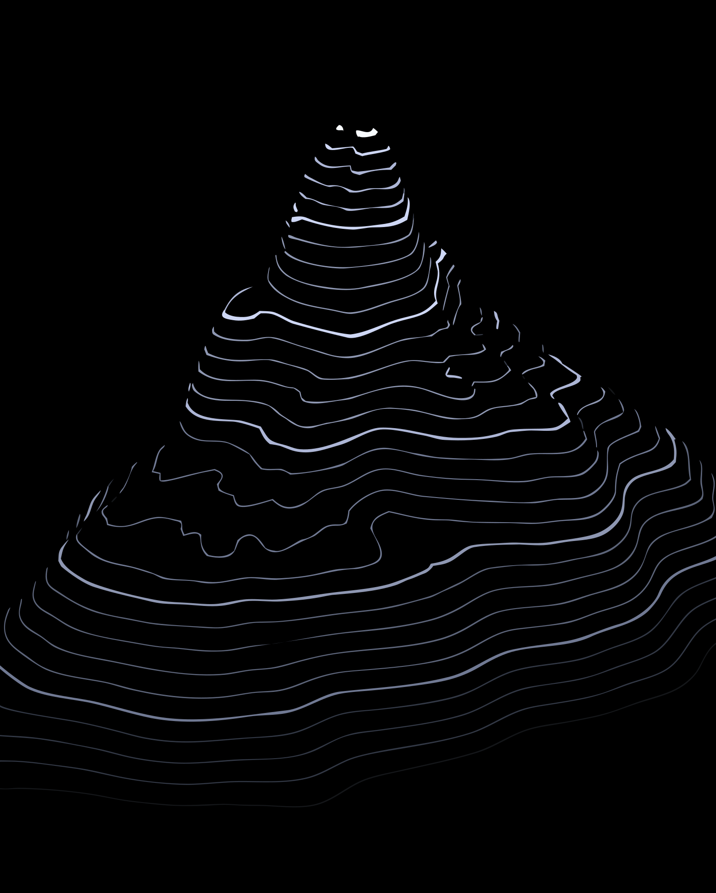
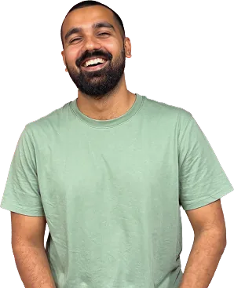

Agile
Different clients require different approaches. We're comfortable working as a support function to your internal design team, launching keystone projects and chasing KPIs.

We are Tibba, a lean design team based out of India. Tibba is a young studio founded in 2023, but it comes with over a decade of experience. Our team has shipped over 25 products and generated over $400 million in revenue, for start-ups and established businesses alike.
Design, for us, is the ability to solve real problems. We enjoy working closely with stakeholders to understand and execute their vision. We love using research to better understand our clients' audiences and to impact their bottom line.
Our approach to every client we work with is unique. We believe in actively listening to a client's needs and modifying our processes accordingly — rather than arriving with a process and fitting the client into it.
How we work with every client, whatever the size of the brief.
Different clients require different approaches. We're comfortable working as a support function to your internal design team, launching keystone projects and chasing KPIs.
We work on two tracks — the delivery track and the discovery track. The former focuses on immediate client needs and deadlines, whilst the latter seeks opportunities for our clients that we can help them capitalise on.
In addition to our team, we work with a number of collaborators and advisors, depending on the needs of a project.

Rahul Beniwal
Founder, designer

Neel Lakhwani
Designer

Riya Pandey
Designer

Sahil Pednekar
Designer